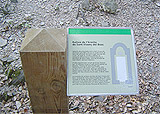
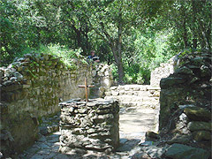
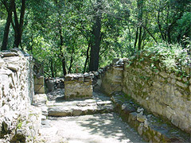
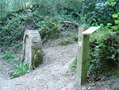

|
Excursión a la Font de l'Ermetà y a la Ermita de Sant Vicenç del Bosc y la Font de Sant Vicenç
Desde el restaurante, tendremos que tomar el camino que queda detrás de la casa, señalizado por una banderola que indica "Sol i Aire". Justo al inicio, sale un sendero a mano derecha, que encontraréis marcado con pintura amarilla y blanca, ya que es un sendero catalogado como Pequeño Recurrido (PR C-38) por la Federació d'Entitats Excursionistes de Catalunya.

 |
|
La primera parada estará en la Font de l'Ermetà, donde habremos llegado atravesando la carena. El lugar es especialmente bello, la grandiosidad de unas encinas centenarias, dan un ambiente de frescor ya que dejan pasar poca luz solar.
Retomando el camino del P.R., seguimos hasta encontrar las ruinas de la Ermita de Sant Vicenç del Bosc. Referenciada en el S. X, en concreto el año 955. |
El precepto del Rey Lotari confirmando todos los bienes del Monestir de Sant Cugat, el año 986, volvía a mencionar la ermita como próxima a la villa de Cercedol (pequeño núcleo de población de la región en la época medieval). A mediados del siglo XI, la ermita ya se había constituido como parroquia. Durante los dos siglos siguientes fue perdiendo importancia. No es hasta 1347 que una donación para restaurar el techo de la capilla, hace que alguien se cuide de ella regularmente. Pero hacia finales de siglo, la parroquia fue perdiendo estatus y quedó incluida dentro de la de Sant Pere d'Octavià. Algunas de las imágenes se conservaron en la rectoría de Sant Cugat, otros están en el Museu Diocesà de Barcelona.

En el año 1981 se emprendió una campaña de limpieza y recuperación del entorno, se redescubrieron los restos de dos muros, la base semicircular del ábside y el suelo de la nave formado por grandes piedras de pizarra, también un fragmento de altar y un bloque de piedra oscura que podría ser una pica circular. El Consorci del Parc de Collserola puso una placa explicativa que encontraréis al lado de las ruinas.
La Font de Sant Vicenç se encuentra en el mismo valle de Can Gordi, muy cerca de la ermita. No encontraréis indicaciones de banderola desde el punto donde llegaréis, pero no es difícil de encontrar ya que está a unos escasos 50 metros de la ermita.
Duración: 50 minutos (ida)
Distancia: 2 km
Dificultad: media-alta. Sendero estrecho con desniveles
[ Ver mapa ] |
|
 |
|
|